TeX is a text formatting and markup language developed by D. Knuth in the late 1970s and early 1980s, which has become the de facto standard for document preparation in mathematics and certain areas of the physical sciences because of its unsurpassed utility in typesetting mathematical formulae. LaTeX is an extension of TeX, which for purposes of discussion can be thought of as a third-party macro package for TeX to provide a logical system for document preparation, where the author does not have to give specific formatting instructions in order to achieve a particular look; the look is provided by an external document class description. [1] [2]
|
TeX is named after the Greek letters tau (τ), epsilon (ε), and chi (χ), reflecting the word τέχνη (téchnē), meaning "art," "craft," or "skill" in Greek. It is pronounced "tech" (as in technology), not "teks." LaTeX stands for Lamport TeX, named after its creator, Leslie Lamport. It is pronounced "LAY-tech" or "LAH-tech." |
TeX Live is one of the major TeX systems (e.g., MiKTeX and TeX Live) that provides binaries for most flavors of Unix, including GNU/Linux and macOS, and also Windows. It includes the major TeX-related programs, macro packages, and fonts that are free software, including support for many languages around the world. Many Unix/GNU/Linux operating systems provide TeX Live through their own distributions and package managers. TeX Live is supported by the TeX Users Group and many other user groups around the world. [3]
| MathJax is an open-source JavaScript display engine for LaTeX, MathML, and AsciiMath notation that works in modern browsers, with built-in support for assistive technology such as screen readers, including automatic speech generation and an expression explorer that can be used to investigate typeset mathematics at a more granular level than the complete expression. [4] |
| TeXLive.net is a powerful online site to edit TeX snippets, run LaTeX, and display PDF documents or error logs. |
|
On Debian, TeX Live is distributed through modular packages, including core typesetting engines ( |
A TeX engine is the underlying program responsible for interpreting TeX instructions and performing the typesetting operations, by processing source input, expands macros, evaluates typesetting commands, arranges text and mathematical expressions, and produces an output representation such as PDF or DVI.
-
pdfTeX is a traditional TeX engine that generates PDF output natively and is suitable for conventional documents and mathematical typesetting.
pdflatex document.tex -
XeTeX is a TeX engine that supports Unicode and system-installed OpenType and TrueType fonts, making it suitable for multilingual documents and advanced typography.
xelatex document.tex -
LuaTeX is an extensible TeX engine that supports Lua scripting, Unicode, and modern font handling.
lualatex document.tex -
pdfTeX, XeTeX, and LuaTeX are engines that process TeX input, while pdfLaTeX, XeLaTeX, and LuaLaTeX are LaTeX workflows that use those engines.
$ tex --version TeX 3.141592653 -
latexmkis a make-like build tool for LaTeX: it tracks the files a document depends on, rebuilds only when one of them changes, and reruns the engine, and BibTeX, Biber, or MakeIndex when needed, until cross-references settle.latexmk -pdf document.tex # pdfLaTeX; -xelatex or -lualatex selects another engine latexmk -pdf -pvc document.tex # watches the sources and rebuilds on every save latexmk -c # removes auxiliary files and keeps the PDF; -C removes the PDF too
1. LaTeX
LaTeX is a document preparation system built on top of TeX, that writes plain-text source file (.tex) that marks up the logical structure of the document, such as titles, sections, lists, equations, figures, and cross-references, and a TeX engine compiles it into typeset output such as PDF. The visual appearance comes from the document class and the loaded packages, so the same source can be restyled without rewriting its content. [1] [5]
1.1. Structures
A LaTeX document consists of a preamble, which configures the document, and a body, which holds the content between \begin{document} and \end{document}.
% hello.tex
\documentclass[11pt,a4paper]{article} % Selects the document class, which defines the overall layout, with optional settings in square brackets.
\usepackage{amsmath,amssymb} % Loads packages that add commands and environments; everything before `\begin{document}` is the preamble.
\usepackage{graphicx}
\usepackage{hyperref}
\title{Hello, \LaTeX} % Declares the title metadata, which is not printed until `\maketitle` is called.
\author{John Doe}
\date{\today}
\begin{document} % Starts the body; only content in the body is typeset.
\maketitle % Prints the title block declared in the preamble.
\section{Introduction}\label{sec:intro} % Starts a numbered section and attaches a label to it for cross-referencing.
The Pythagorean theorem states that \(a^2 + b^2 = c^2\).
\begin{equation}\label{eq:euler} % Typesets a numbered display equation.
e^{i\pi} + 1 = 0
\end{equation}
% Refers to labels by name; LaTeX fills in the numbers, and `~` is a non-breaking space
% that keeps the number on the same line as its noun.
Equation~\eqref{eq:euler} appears in Section~\ref{sec:intro}.
\end{document}LaTeX writes intermediate data, such as labels, the table of contents, and citations, to auxiliary files (.aux, .toc, .log) and reads them back on the next run. A document with cross-references therefore needs more than one pass, which latexmk automates.
# Run the engine twice so that \ref and \eqref resolve to numbers.
pdflatex hello.tex
pdflatex hello.tex
# Or let latexmk run as many passes as needed.
latexmk -pdf hello.tex # -xelatex or -lualatex selects another engine
# Remove the auxiliary files, keeping the PDF.
latexmk -cThe document class determines the available sectioning commands and the default layout:
-
article: short documents such as papers, notes, and reports without chapters. -
report: longer documents divided into chapters, such as theses and technical reports. -
book: books with front matter, chapters, and two-sided layout by default. -
beamer: presentation slides. -
standalone: a single figure or formula cropped to its content, commonly used to produce TikZ graphics.
1.2. Commands
A command is a backslash followed by a name, with optional arguments in square brackets and mandatory arguments in curly braces: \name[optional]{mandatory}.
-
A command name (called a control word) begins with a backslash (
\) followed by one or more case-sensitive letters.\LaTeX % predefined \latex % undefined -
A single non-letter with a leading backslash (
\) forms a control symbol.Character Typeset Output Character Typeset Output %\%%
$\$$
&\&&
#\##
_\__
{\{{
}\}}
~\textasciitilde~
^\textasciicircum^
\\textbackslash\
-
A command ignores the spaces immediately following its name, so use empty braces
\LaTeX{}or insert an explicit space\LaTeX\. -
A command is either a TeX primitive built into the engine, such as
\hboxor\def, or a predefined macro, such as\section,\textbf, or user-defined with\newcommand.\newcommand{\R}{\mathbb{R}} % no argument: \R \newcommand{\norm}[1]{\left\lVert #1 \right\rVert} % one argument: \norm{x}\[\boxed{\text{LaTeX source} \rightarrow \text{macro expansion} \rightarrow \text{TeX primitives} \rightarrow \text{typesetting} \rightarrow \text{PDF}}\]
1.3. Environments
An environment is a structured block of content enclosed between two commands: \begin{name} and \end{name}.
|
|
|
-
In LaTeX, certain formatting changes apply only within a particular environment and are automatically restored when that environment ends, like curly braces
{...}which creates a group and establishes a local scope for certain changes.Normal text. \begin{large} This text is larger. \end{large} Normal text again. -
A new environment can be defined with
\newenvironment{name}{begin-definition}{end-definition}.\newenvironment{mybox} { \begin{center} \bfseries } { \end{center} }\begin{mybox} Welcome to LaTeX! \end{mybox}
1.4. Packages
Packages extend LaTeX with new commands and environments and are loaded in the preamble with \usepackage[options]{name}. TeX Live ships thousands of packages, and the following are found in most mathematical documents:
| Package | Purpose |
|---|---|
|
Mathematical environments and commands such as |
|
Additional mathematical symbols and fonts such as |
|
Includes external images with |
|
Sets page size and margins, such as |
|
Turns cross-references, citations, and URLs into hyperlinks; load it last because it patches other packages. |
|
Draws vector graphics and plots, as described in Graphics. |
Many environments used in the Mathematics section, such as aligned, gather, pmatrix, and cases, require amsmath in a LaTeX document. MathJax provides them by default, so they work in the browser without loading any package.
|
1.5. Mathematics
LaTeX allows two writing modes for mathematical expressions: the inline math mode and display math mode: [6]
-
inline math mode is used to write formulas that are part of a paragraph:
The Pythagorean theorem is \(a^2 + b^2 = c^2\).The Pythagorean theorem is \(a^2 + b^2 = c^2\).
-
display math mode is used to write expressions that are not part of a paragraph, and are therefore put on separate lines
The quadratic formula is: \[ x=\frac{-b\pm\sqrt{b^2-4ac}}{2a} \]The quadratic formula is:
\[ x=\frac{-b\pm\sqrt{b^2-4ac}}{2a} \]
1.5.1. Rules
-
Use curly braces
{}when an exponent contains more than one character.LaTeX Result LaTeX Result x^{a+b}\(x^{a+b}\)
x^a+b\(x^a+b\)
-
Use a backslash (
\) followed by a command name to enter LaTeX symbols and expressions.LaTeX Result LaTeX Result LaTeX Result \frac{a}{b}
\(\frac{a}{b}\)
\sqrt{x}
\(\sqrt{x}\)
x^2
\(x^2\)
\alpha
\(\alpha\)
\infty
\(\infty\)
75\%
\(75\%\)
\text{hello}
\(\text{hello}\)
\textit{hello}
\(\textit{hello}\)
\textbf{hello}
\(\textbf{hello}\)
\underline{x}
\(\underline{x}\)
\overline{x}
\(\overline{x}\)
\vec{x}
\(\vec{x}\)
\quad
\(a \quad b\)
\times
\(a \times b\)
\leq
\(a \leq b\)
\text{for all } x>0
\(\text{for all } x>0\)
\neq
\(a \neq b\)
\pm
\(a \pm b\)
-
Use spacing commands to control the horizontal space between mathematical symbols and expressions.
LaTeX Purpose Example Result LaTeX Purpose Example Result \!Negative thin space
a\!b\(a\!b\)
\Normal space
a\ b\(a\ b\)
\,Thin space
a\,b\(a\,b\)
\:Medium space
a\:b\(a\:b\)
\;Thick space
a\;b\(a\;b\)
\quadWide space
a\quad b\(a\quad b\)
\qquadExtra-wide space
a\qquad b\(a\qquad b\)
\hspace{1em}Custom horizontal space
a\hspace{1em}b\(a\hspace{1em}b\)
\\[pt]Line break
\a\\b\(a\\b\)
\a\\[6pt]b\(a\\[6pt]b\)
-
Use environment that starts with
\begin{...}and ends with\end{...}to format or arrange the content inside it.Environment Purpose LaTeX Result equationA single numbered equation
\begin{equation} E = mc^2 \end{equation}\(E = mc^2\) (numbered)
alignedMultiple aligned equations
\begin{aligned} x + y &= 5 \\ x - y &= 1 \end{aligned}\(\begin{aligned}x+y&=5\\x-y&=1\end{aligned}\)
gatherMultiple centered equations
\begin{gather} x + y = 5 \\ x - y = 1 \end{gather}\(\begin{gather}x+y=5\\x-y=1\end{gather}\)
matrixMatrix elements without surrounding brackets
\begin{matrix} a & b \\ c & d \end{matrix}\(\begin{matrix}a&b\\c&d\end{matrix}\)
pmatrixMatrix elements surrounded by parentheses
\begin{pmatrix} a & b \\ c & d \end{pmatrix}\(\begin{pmatrix}a&b\\c&d\end{pmatrix}\)
bmatrixMatrix elements surrounded by square brackets
\begin{bmatrix} a & b \\ c & d \end{bmatrix}\(\begin{bmatrix}a&b\\c&d\end{bmatrix}\)
casesPiecewise-defined functions
f(x) = \begin{cases} x^2 & x \geq 0 \\ -x & x < 0 \end{cases}\(f(x)=\begin{cases}x^2&x\geq0\\-x&x<0\end{cases}\)
1.5.2. Superscripts and subscripts
| LaTeX | Result | Meaning |
|---|---|---|
|
\(x^2\) |
\(x\) squared |
|
\(x^{10}\) |
\(x\) to the tenth power |
|
\(a_i\) |
Subscript \(i\) |
|
\(x_i^2\) |
Subscript and superscript |
|
\(x^{n+1}\) |
A multi-character exponent |
|
\(a_{i,j}\) |
A multi-character subscript |
1.5.3. Fractions and binomials
| LaTeX | Result | LaTeX | Result | LaTeX | Result |
|---|---|---|---|---|---|
|
\(\frac{a}{b}\) |
|
\(\dfrac{a}{b}\) |
|
\(\dfrac{x + 1}{x + 2}\) |
|
\(\binom{n}{k}\) |
|
\(\dbinom{n}{k}\) |
|
\(\dbinom{n+1}{k-1}\) |
|
\(P(n,r) = \dfrac{n!}{(n-r)!}\) |
|
\(C(n,r) = \dbinom{n}{r} = \dfrac{n!}{r!(n-r)!}\) |
||
1.5.4. Greek letters
| LaTeX | Result | LaTeX | Result | LaTeX | Result |
|---|---|---|---|---|---|
|
\(\alpha, A\) |
|
\(\beta, B\) |
|
\(\gamma, \Gamma\) |
|
\(\delta, \Delta\) |
|
\(\epsilon, \varepsilon, E\) |
|
\(\zeta, Z\) |
|
\(\eta, H\) |
|
\(\theta, \vartheta, \Theta\) |
|
\(\iota, I\) |
|
\(\kappa, K\) |
|
\(\lambda, \Lambda\) |
|
\(\mu, M\) |
|
\(\nu, N\) |
|
\(\xi, \Xi\) |
|
\(o, O\) (omicron) |
|
\(\pi, \varpi, \Pi\) |
|
\(\rho, \varrho, P\) |
|
\(\sigma, \varsigma, \Sigma\) |
|
\(\tau, T\) |
|
\(\upsilon, \Upsilon\) |
|
\(\phi, \varphi, \Phi\) |
|
\(\chi, X\) |
|
\(\psi, \Psi\) |
|
\(\omega, \Omega\) |
1.5.5. Mathematical operators and symbols
| LaTeX | Result | Meaning | LaTeX | Result | Meaning |
|---|---|---|---|---|---|
|
\(+\) |
Addition |
|
\(-\) |
Subtraction |
|
\(\times\) |
Multiplication |
|
\(\div\) |
Division |
|
\(\pm\) |
Plus or minus |
|
\(\mp\) |
Minus or plus |
|
\(=\) |
Equal to |
|
\(\neq\) |
Not equal to |
|
\(<\) |
Less than |
|
\(>\) |
Greater than |
|
\(\leq\) |
Less than or equal to |
|
\(\geq\) |
Greater than or equal to |
|
\(\approx\) |
Approximately equal to |
|
\(\equiv\) |
Equivalent to; identically equal to |
|
\(\propto\) |
Proportional to |
|
\(\infty\) |
Infinity |
|
\(\sqrt{x}\) |
Square root |
|
\(\sum\) |
Summation |
|
\(\in\) |
Is an element of |
|
\(\notin\) |
Is not an element of |
|
\(\subseteq\) |
Is a subset of |
|
\(\supseteq\) |
Is a superset of |
|
\(\cup\) |
Union of sets |
|
\(\cap\) |
Intersection of sets |
|
\(\emptyset\) |
Empty set |
|
\(\mathbb{R}\) |
Set of real numbers |
|
\(\forall\) |
For all |
|
\(\exists\) |
There exists |
|
\(\land\) |
Logical AND |
|
\(\lor\) |
Logical OR |
|
\(\neg\) |
Logical NOT |
|
\(\to\) |
Maps to; tends to |
|
\(\Rightarrow\) |
Implies (compact) |
|
\(\implies\) |
Implies (long, wide spacing) |
|
\(\Leftrightarrow\) |
Equivalent (compact) |
|
\(\iff\) |
If and only if (long, wide spacing) |
|
\(\mapsto\) |
Maps element to |
|
\(\partial\) |
Partial derivative symbol |
|
Pick an arrow by meaning, because several share a glyph but not their spacing or role:
|
|
Use
|
1.5.6. Summations, products, and integrals
| LaTeX | Result | Remark |
|---|---|---|
|
\(\sum_{i=1}^{n} i\) |
Summation from \(i=1\) to \(i=n\). |
|
\(\sum_{k=0}^{n} k^2\) |
Sum of the squares of the integers from \(0\) to \(n\). |
|
\(\prod_{i=1}^{n} i\) |
Product of the integers from \(1\) to \(n\). |
|
\(\lim_{n\to\infty} \sum_{i=1}^{n} \frac{1}{i}\) |
Limit of a sequence of partial sums. |
|
\(\int x^2\,dx\) |
Indefinite integral; |
|
\(\int_0^1 x^2\,dx\) |
Definite integral from \(0\) to \(1\). |
|
\(\iint_D f(x,y)\,dx\,dy\) |
Double integral over a region \(D\). |
|
\(\iiint_V f(x,y,z)\,dx\,dy\,dz\) |
Triple integral over a volume \(V\). |
|
\(\oint_C F(z)\,dz\) |
Contour integral over a closed curve \(C\). |
|
\(\frac{1}{2\pi i}\oint_C \frac{f(z)}{z-a}\,dz\) |
Example of a contour integral from complex analysis. |
1.5.7. Brackets and parentheses
| Left delimiter | Right delimiter | LaTeX | Result |
|---|---|---|---|
|
|
|
\(\left( x \right)\) |
|
|
|
\(\left[ x \right]\) |
|
|
|
\(\left\{ x \right\}\) |
|
|
|
\(\left\lvert x \right\rvert\) |
|
|
|
\(\left\lVert \mathbf{x} \right\rVert\) |
|
|
|
\(\left\langle x \right\rangle\) |
|
|
|
\(\left. F(x) \right| _a^b \) |
|
|
|
\(\left| x \right.\) |
|
Every \[ \left\{\frac{1}{n}:n\in\mathbb{N}\right\} \] To make one side invisible, use a dot ( \[ \left. \text{expression} \right| \] \[ \left| \text{expression} \right. \] |
1.5.8. Matrices and equations
| LaTeX | Result | LaTeX | Result |
|---|---|---|---|
|
\[ \begin{matrix} a & b \\ c & d \end{matrix} \] |
|
\[ \begin{bmatrix} a & b \\ c & d \end{bmatrix} \] |
|
\[ \begin{pmatrix} a & b \\ c & d \end{pmatrix} \] |
|
\[ \begin{vmatrix} a & b \\ c & d \end{vmatrix} \] |
|
\[ \begin{align*} x+y &= 10 \\ x-y &= 2 \end{align*} \] |
|
\(\begin{split}A &= \frac{\pi r^2}{2} \\ &= \frac{1}{2} \pi r^2\end{split}\) |
1.5.9. Functions and named operators
| LaTeX | Result | LaTeX | Result | LaTeX | Result |
|---|---|---|---|---|---|
|
\(\sin x\) |
|
\(\cos x\) |
|
\(\tan x\) |
|
\(\cot x\) |
|
\(\sec x\) |
|
\(\csc x\) |
|
\(\arcsin x\) |
|
\(\arccos x\) |
|
\(\arctan x\) |
|
\(\sinh x\) |
|
\(\cosh x\) |
|
\(\tanh x\) |
|
\(\log x\) |
|
\(\ln x\) |
|
\(\log_a x\) |
|
\(\exp x\) |
|
\(\sqrt{x}\) |
|
\(\sqrt[n]{x}\) |
|
\(\lim_{x\to 0}\) |
|
\(\lim_{x\to\infty}\) |
|
\(\infty\) |
|
\(\max(a,b)\) |
|
\(\min(a,b)\) |
|
\(\sup A\) |
|
\(\inf A\) |
|
\(\det A\) |
|
\(\dim V\) |
|
\(\gcd(a,b)\) |
|
\(\arg z\) |
|
\(\ker T\) |
|
\(\Pr(A)\) |
|
\(\sin^2 x\) |
|
\(\cos^2 x\) |
1.6. Graphics
LaTeX produces graphics in two ways: including an image file created by another program, or drawing the graphic natively from TeX code, so that its fonts, sizes, and mathematical notation match the surrounding text.
| Approach | Tool | Best for |
|---|---|---|
Include a file |
|
Photos, screenshots, and plots exported by other programs. |
Draw natively |
TikZ (on PGF) |
Diagrams, geometric constructions, vectors, and annotations. |
Plot natively |
PGFPlots |
Function plots and small to medium data sets. |
Plot externally |
gnuplot |
Heavy numerical computation, large data sets, and 3-D surfaces. |
1.6.1. Including images and figures
The graphicx package provides \includegraphics[options]{file}, which inserts an image and optionally resizes or rotates it.
| pdfLaTeX, XeLaTeX, and LuaLaTeX accept PDF, PNG, and JPG files; prefer PDF for vector graphics, PNG for screenshots, and JPG for photos. The file extension may be omitted, in which case LaTeX searches for a supported format. |
| Option | Effect |
|---|---|
|
Scales the image to 70% of the text width, keeping the aspect ratio. |
|
Scales the image to a fixed height, keeping the aspect ratio. |
|
Scales the image by a factor. |
|
Rotates the image counterclockwise by the given degrees. |
-
An image is usually placed inside a
figureenvironment, which adds a numbered caption and makes the figure a float: LaTeX may move it to the top or bottom of a page, or to the next page, to avoid awkward page breaks.\begin{figure}[htbp] % placement preference: here, top, bottom, page \centering \includegraphics[width=0.7\textwidth]{diagram.pdf} \caption{A diagram included from an external file.} \label{fig:diagram} % must follow \caption to get the figure number \end{figure} Figure~\ref{fig:diagram} shows the overall structure. -
The
subcaptionpackage places several images side by side in one figure, each with its own sub-caption and label, so that\ref{fig:before}prints a reference such as1a, while the command\listoffiguresprints a list of all figure captions, and\caption[short]{long}supplies a shorter entry for that list.\usepackage{subcaption} % in the preamble \begin{figure}[htbp] \centering \begin{subfigure}{0.45\textwidth} \centering \includegraphics[width=\linewidth]{before.pdf} \caption{Before} \label{fig:before} \end{subfigure} \hfill % pushes the two subfigures apart \begin{subfigure}{0.45\textwidth} \centering \includegraphics[width=\linewidth]{after.pdf} \caption{After} \label{fig:after} \end{subfigure} \caption{Two images side by side.} \label{fig:compare} \end{figure}
1.6.2. Drawing with TikZ
PGF (Portable Graphics Format) is a low-level system for drawing vector graphics in TeX, and TikZ (TikZ ist kein Zeichenprogramm, "TikZ is not a drawing program") is the high-level language built on top of it.
-
A drawing lives in a
tikzpictureenvironment, where each statement builds a path through coordinates and ends with a semicolon (;). -
A coordinate is written as
(x,y)in centimeters by default, or as(angle:radius)in polar form.\begin{tikzpicture} \draw[thick] (0,0) -- (4,0) -- (2,3) -- cycle; \node at (2,-0.3) {Triangle}; \end{tikzpicture}
| Syntax | Effect |
|---|---|
|
Strokes, fills, or both strokes and fills a path. |
|
Places text, which may contain math, at a coordinate. |
|
Draws a straight line from |
|
Closes the path back to its starting point. |
|
Draws a rectangle with opposite corners |
|
Draws a circle with center |
|
Draws an ellipse with center |
|
Draws a cubic Bézier curve from |
|
Draws an arc of radius |
|
Draws a grid in the rectangle with corners |
|
Attaches text to the current point of a path, positioned with |
-
Options in square brackets set the style of a path, such as line width (
thick), pattern (dashed), color (red, or a mix such asblue!20for 20% blue), and arrow tips (->).% vector.tex \documentclass{article} \usepackage{tikz} \begin{document} \begin{tikzpicture} % Axes with arrow tips and labels \draw[->] (-0.5,0) -- (3.5,0) node[right] {$x$}; \draw[->] (0,-0.5) -- (0,2.5) node[above] {$y$}; % Reference grid \draw[help lines, dashed] (0,0) grid (3,2); % Vector from the origin, labelled at its tip \draw[thick, blue, ->] (0,0) -- (3,2) node[above right] {$\vec{v} = (3,2)$}; % Angle between the vector and the x-axis \draw (0.8,0) arc (0:33.7:0.8); \node at (1.1,0.3) {$\theta$}; % Filled point with a label \fill[red] (3,0) circle (2pt) node[below] {$(3,0)$}; \end{tikzpicture} \end{document}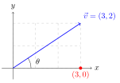
-
Larger drawings rely on a few more techniques, which name and reuse points and styles instead of repeating raw coordinates:
Syntax Effect \coordinate (A) at (1,2);Names a point, which later paths refer to as
(A).\node[draw, circle] (B) at (3,0) {text};Creates a named node;
drawadds its border, and lines drawn to(B)stop at that border. Anchors such as(B.north)and(B.east)refer to points on it.++(1,0),+(1,0)Gives a coordinate relative to the current point;
++also moves the current point, whereas+does not.(a) -| (b),(a) |- (b)Connects two points with a horizontal then vertical line, or a vertical then horizontal line.
\foreach \x in {0,...,4} { ... }Repeats a command for each value, such as tick marks or a row of shapes.
[dot/.style={circle, fill}]Defines a reusable style for one picture;
\tikzset{...}in the preamble defines it for the whole document.scale=2,shift={(1,0)},rotate=30Transforms a whole picture or a single path.
-
TikZ keeps optional features in libraries, which are loaded in the preamble with
\usetikzlibrary{...}:Library Purpose positioningPlaces nodes relative to each other, such as
right=of Aorbelow=1cm of A.arrows.metaProvides configurable arrow tips, such as
-{Stealth}and-{Latex[length=3mm]}.calcComputes coordinates, such as the midpoint
$(A)!0.5!(B)$or the offset$(A)+(1,0)$.shapes.geometricAdds node shapes such as
diamond,ellipse, andregular polygon.The following flowchart combines named nodes, styles, libraries, and relative coordinates:
% flowchart.tex \documentclass{article} \usepackage{tikz} \usetikzlibrary{positioning, arrows.meta, shapes.geometric} \begin{document} \begin{tikzpicture}[ node distance = 8mm and 10mm, % vertical and horizontal gaps box/.style = {draw, rounded corners, minimum height=8mm, align=center}, decision/.style = {draw, diamond, aspect=2, align=center}, arrow/.style = {-{Stealth}, thick}, ] \node[box] (src) {Source\\\texttt{.tex}}; \node[box, right=of src] (engine) {TeX engine}; \node[decision, right=of engine] (refs) {References\\resolved?}; \node[box, right=of refs] (pdf) {PDF}; \draw[arrow] (src) -- (engine); \draw[arrow] (engine) -- (refs); \draw[arrow] (refs) -- node[above] {yes} (pdf); \draw[arrow] (refs.south) -- ++(0,-0.8) -| node[pos=0.25, below] {no, rerun} (engine.south); \end{tikzpicture} \end{document}\foreachandcalchandle repetition and computed positions:\usetikzlibrary{calc} \begin{tikzpicture}[dot/.style={circle, fill, inner sep=1.5pt}] \draw[->] (-0.5,0) -- (5.5,0) node[right] {$x$}; \foreach \x in {0,...,5} \draw (\x,0.1) -- (\x,-0.1) node[below] {$\x$}; \coordinate (A) at (1,1); \coordinate (B) at (4,2); \draw[thick] (A) node[dot] {} -- (B) node[dot] {}; \node[dot, red, label=above:midpoint] at ($(A)!0.5!(B)$) {}; % requires \usetikzlibrary{calc} \end{tikzpicture}
| The TikZ and PGF manual covers the full language, including decorations, matrices, and 3-D drawing. [7] |
1.6.3. Plotting with PGFPlots
PGFPlots is a plotting package built on TikZ. A plot is an axis environment inside a tikzpicture, and each \addplot command draws one data series, either from a mathematical expression evaluated over a domain with a given number of samples, or from data points.
|
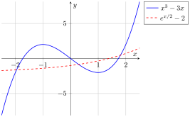 |
Data can be given inline or read from a file whose columns are separated by whitespace and whose first row names the columns:
\addplot coordinates {(0,0) (1,1) (2,4) (3,9)};
\addplot table[x=t, y=v] {data.dat};Options on the axis environment control the whole plot, while options on \addplot style a single series:
| Option | Effect |
|---|---|
|
Fixes the visible range instead of fitting it to the data. |
|
Sets tick positions and their labels, such as |
|
Sets the size of the plot. |
|
Draws the axes through the origin ( |
|
Adds a title, axis labels, and positions the legend. |
|
Per-series options: draws markers, draws markers without lines, draws lines without markers, or smooths the line through the points. |
The following snippets of common plots assume the preamble of plot.tex, and each one is the body of a tikzpicture.
| The PGFPlots manual describes every option, plot type, and library. [8] |
-
Radians: PGFPlots evaluates trigonometric functions in degrees, so a plot over radians either converts each argument with
deg, as insin(deg(x)), or setstrig format plots=rad, which makessin,cos, andtantake radians inside\addplot. Tick positions accept expressions such aspi/2, andxticklabelsprints them as multiples of \(\pi\).\begin{axis}[ trig format plots = rad, % only \addplot expressions; \draw coordinates are unaffected axis lines = middle, domain = -2*pi:2*pi, samples = 200, xtick = {-2*pi, -pi, 0, pi, 2*pi}, xticklabels = {$-2\pi$, $-\pi$, $0$, $\pi$, $2\pi$}, ] \addplot[blue, thick] {sin(x)}; % without the option: sin(deg(x)) \addplot[red, thick, dashed] {cos(x)}; \end{axis}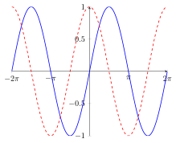
-
Piecewise function: the conditional operator
condition ? a : b, or its function formifthenelse(condition, a, b), selects a branch per sample.\begin{axis}[axis lines = middle, domain = -2:2, samples = 101] \addplot[blue, thick] {x < 0 ? -x : x^2}; % \addplot[blue, thick] {ifthenelse(x < 0), -x, x^2)}; \end{axis}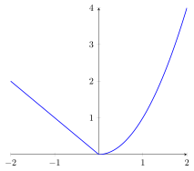
A single \addplotconnects consecutive samples, so a conditional across a jump draws a false vertical segment at the jump. -
Piecewise function with a jump: one
\addplotper piece, each with its owndomain, leaves the gap open; a filled marker shows the endpoint that belongs to the function, and a hollow marker (fill=white) the one that does not.\begin{axis}[axis lines = middle, samples = 100, ymin = -1.5, ymax = 4.5] \addplot[blue, thick, domain=-2:1] {x^2}; \addplot[blue, thick, domain=1:3] {x - 2}; \addplot[blue, only marks, mark=*] coordinates {(1,1)}; % f(1) = 1 \addplot[blue, only marks, mark=*, fill=white] coordinates {(1,-1)}; % excluded \end{axis}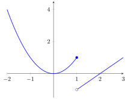
-
Vertical asymptotes: near a pole such as \(x = 0\) in \(\dfrac{1}{x}\), samples on both sides would be joined by a near-vertical line.
-
restrict y to domaindiscards samples outside a y-range, including the infinite value at the pole, andunbounded coords=jumpbreaks the line at each discarded sample instead of bridging it.\begin{axis}[ axis lines = middle, domain = -4:4, samples = 201, % odd count, so x = 0 is sampled and discarded restrict y to domain = -10:10, % wider than the visible range, so the curve reaches the edge unbounded coords = jump, ymin = -6, ymax = 6, ] \addplot[blue, thick] {1/x}; \end{axis}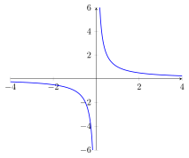
-
Inside an
axis,\drawuses data coordinates, so a dashed line marks an asymptote, such astan(x):\begin{axis}[ trig format plots = rad, axis lines = middle, domain = -1.5*pi:1.5*pi, samples = 301, restrict y to domain = -5:5, unbounded coords = jump, ymin = -4, ymax = 4, xtick = {-pi/2, pi/2}, xticklabels = {$-\frac{\pi}{2}$, $\frac{\pi}{2}$}, ] \addplot[blue, thick] {tan(x)}; \draw[gray, dashed] (-pi/2,-4) -- (-pi/2,4); \draw[gray, dashed] (pi/2,-4) -- (pi/2,4); \end{axis}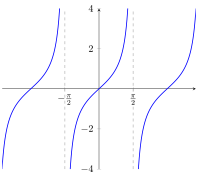
-
-
Area under a curve: the
fillbetweenlibrary shades the region between two named paths, which illustrates a definite integral;soft cliplimits the shading to the interval of integration.\usepgfplotslibrary{fillbetween} % in the preamble \begin{axis}[ axis lines = middle, xlabel = $x$, ylabel = $y$, xmin = -0.2, xmax = 1.4, ymin = -0.2, ymax = 1.6, samples = 100, ] \addplot[name path=f, blue, thick, domain=-0.2:1.2] {x^2}; \path[name path=xaxis] (0,0) -- (1,0); \addplot[blue!20] fill between[of=f and xaxis, soft clip={domain=0:1}]; \node at (0.4,1.2) {$\int_0^1 x^2\,dx = \frac{1}{3}$}; \end{axis}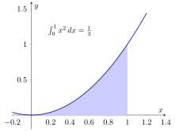
-
Named functions:
declare functiondefines functions once per axis, or for the whole document inside\pgfplotsset{...}, so that several plots reuse them. Parameters are written as macros such as\x.\begin{axis}[ axis lines = middle, domain = -3:3, samples = 100, declare function = { f(\x) = exp(-\x^2/2); g(\x) = 1/(1 + \x^2); }, ] \addplot[blue, thick] {f(x)}; \addlegendentry{$e^{-x^2/2}$} \addplot[red, thick] {g(x)}; \addlegendentry{$\frac{1}{1+x^2}$} \end{axis}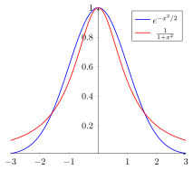
-
Parametric curve: a coordinate pair
({x(t)}, {y(t)})in parentheses plots \(x\) and \(y\) as functions of one parameter, named withvariable=t; the braces protect commas and parentheses inside each expression, andaxis equalkeeps the units on both axes the same length.\begin{axis}[axis lines = middle, axis equal, trig format plots = rad] \addplot[blue, thick, domain=0:2*pi, samples=200, variable=t] ({cos(3*t)}, {sin(2*t)}); % Lissajous curve \addplot[red, thick, domain=0:2*pi, samples=200, variable=t] ({cos(t)}, {sin(t)}); % x^2 + y^2 = 1 \end{axis}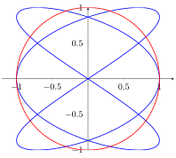
-
Polar curve: the
polarlibrary’spolaraxisenvironment readsxas the angle in degrees and the expression as the radius \(r\).\usepgfplotslibrary{polar} % in the preamble \begin{polaraxis} \addplot[blue, thick, domain=0:180, samples=300] {cos(3*x)}; % three-petal rose \end{polaraxis}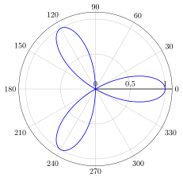
-
Logarithmic axes:
ymode=log,xmode=log, or thesemilogyaxisandloglogaxisenvironments scale an axis logarithmically, which turns exponential growth into a straight line.\begin{axis}[ymode = log, axis lines = left, domain = 0:5, samples = 50, grid = major] \addplot[blue, thick] {exp(x)}; \addlegendentry{$e^x$} \addplot[red, thick] {x^3}; \addlegendentry{$x^3$} \end{axis}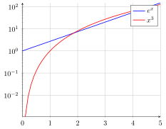
-
Surface:
\addplot3plots a function of two variables, and thesurfoption draws it as a colored surface;view={azimuth}{elevation}sets the viewing angle.\begin{axis}[view={60}{30}, xlabel=$x$, ylabel=$y$, zlabel=$z$] \addplot3[surf, domain=-2:2, samples=25] {exp(-x^2-y^2)}; \end{axis}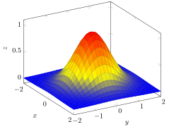
-
Multiple panels: several
axisenvironments in onetikzpictureform a figure of side-by-side plots, either laid out as a grid by thegroupplotslibrary or placed one by one relative to each other.-
The
groupplotslibrary lays out a grid of axes in onegroupplotenvironment;group sizesets the columns and rows,\nextgroupplotstarts the next panel and takes that panel’s own options, and options ongroupplotapply to every panel. With a shared range,xticklabels at=edge bottomandyticklabels at=edge leftprint tick labels only on the outer panels.\usepgfplotslibrary{groupplots} % in the preamble \begin{groupplot}[ group style = { group size = 2 by 2, % columns by rows horizontal sep = 0.5cm, vertical sep = 1.2cm, % leaves room for the titles xticklabels at = edge bottom, yticklabels at = edge left, }, width = 5cm, height = 4cm, % size of each panel, not the whole grid domain = -2:2, samples = 100, xmin = -2, xmax = 2, ymin = -4, ymax = 4, grid = major, ] \nextgroupplot[title = {$x$}] \addplot[blue, thick] {x}; \nextgroupplot[title = {$x^2$}] \addplot[red, thick] {x^2}; \nextgroupplot[title = {$x^3$}] \addplot[teal, thick] {x^3}; \nextgroupplot[title = {$e^x$}] \addplot[orange, thick] {exp(x)}; \end{groupplot}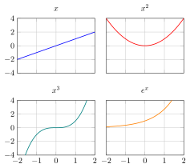
Each panel is scaled to its own data unless the ranges are fixed. Without the shared xmin,xmax,ymin, andymax, hiding the inner tick labels would leave panels whose scales cannot be compared. -
Without a library, each
axisgets aname, and the next one is placed against it withatandanchor, soat={(p1.east)}, anchor=westputs its left edge on the right edge ofp1. A style defined with\pgfplotsset{panel/.style={...}}holds the options the panels share. Panels placed this way can differ in size, range, and alignment, which suits figures that compare unlike plots rather than a uniform grid.\pgfplotsset{ panel/.style = { width = 5cm, height = 5cm, axis lines = middle, ticks = none, domain = -1.8:1.8, samples = 100, clip = false, % keeps markers on the edge whole }, } \begin{axis}[panel, name = p1, ymin = -0.5, ymax = 4, title = {even: $y = x^2$}] \addplot[blue, thick] {x^2}; \addplot[only marks, mark = *] coordinates {(-1.5,2.25) (1.5,2.25)}; \draw[gray, dashed] (-1.5,2.25) -- (1.5,2.25); \end{axis} \begin{axis}[panel, name = p2, at = {(p1.east)}, anchor = west, xshift = 1cm, domain = -1.55:1.55, ymin = -4, ymax = 4, title = {odd: $y = x^3$}] \addplot[red, thick] {x^3}; \addplot[only marks, mark = *] coordinates {(-1.3,-2.197) (1.3,2.197)}; \draw[gray, dashed] (-1.3,-2.197) -- (1.3,2.197); \end{axis}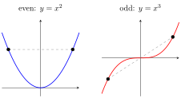
With clip = false, a curve whosedomainreaches pastyminorymaxis drawn outside the panel, so the odd panel narrows its owndomainto keep \(x^3\) inside the range.
-
1.6.4. External plots with gnuplot
gnuplot is an external, command-driven plotting program that generates two- and three-dimensional plots from mathematical expressions or numerical data. Commands are typed at the interactive gnuplot> prompt or collected in a script that runs with gnuplot plot.gnu. A script typically configures the plot with set commands and then draws it with plot for two dimensions or splot for three.
The terminal selects the output format, and set output names the file to write; without them, gnuplot draws in an interactive window if its build supports one.
| Terminal | Output |
|---|---|
|
An interactive window, and the default when no terminal is set. Debian’s |
|
A PDF file, for inclusion in LaTeX documents with |
|
A PNG bitmap, for web pages and slides. |
|
An SVG vector image, for web pages. |
|
A PDF with the graphics and a |
The following commands appear in most scripts:
| Command | Effect |
|---|---|
|
Selects the output format and the image size. |
|
Names the output file; |
|
Adds a title and axis labels. |
|
Fixes the visible range instead of fitting it to the data. |
|
Sets the tick interval, or explicit tick positions with labels. |
|
Draws grid lines at the major ticks. |
|
Positions or hides the legend, which gnuplot calls the key. |
|
Sets the number of points at which functions are evaluated. |
|
Defines a user function; |
|
Draws a 2-D plot, draws a 3-D plot, or redraws the last plot after settings change. |
Expressions use x as the variable in plot and x and y in splot, ** for powers, and built-in functions such as sin, cos, exp, log, sqrt, and abs, with the constant pi. Trigonometric functions take radians.
Division of two integers is integer division, so 1/2 evaluates to 0; write 1.0/2 to get 0.5.
|
A plot command lists one or more series separated by commas, each followed by modifiers that select the data and its style:
| Modifier | Effect |
|---|---|
|
Takes x from column 1 and y from column 2 of a data file; |
|
Sets or suppresses the series' entry in the legend. |
|
Draws the series as lines, markers, both, bars, or points with error bars; abbreviated as |
|
Sets the line width, line color, dash type, and point type. |
The following script plots two functions and saves them as a PDF:
# plot.gnu
set terminal pdfcairo size 12cm,8cm
set output "gnuplot-graph.pdf"
set xlabel "x"
set ylabel "y"
set xrange [-2*pi:2*pi]
set yrange [-1.5:1.5]
set xtics ("-2π" -2*pi, "-π" -pi, "0" 0, "π" pi, "2π" 2*pi)
set grid
set key top right
plot sin(x) title "sin(x)" with lines lw 2 lc rgb "blue", \
cos(x) title "cos(x)" with lines lw 2 lc rgb "red" dt 2
unset output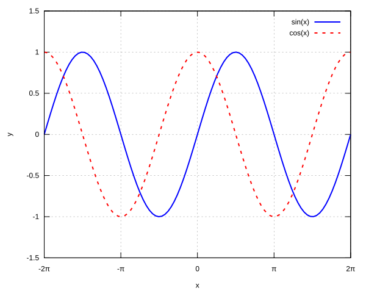
A data file holds whitespace-separated columns, and lines starting with # are comments. The fit command adjusts the parameters of a function to the data by least squares, prints the results, and appends them to fit.log in the current directory; set fit quiet nolog suppresses both:
# fit.gnu
# data.dat:
# # x y error
# 1 2.1 0.2
# 2 3.9 0.3
# 3 6.2 0.3
# 4 7.8 0.4
# 5 10.1 0.4
set terminal pdfcairo
set output "fit.pdf"
f(x) = a*x + b
fit f(x) "data.dat" using 1:2 via a, b
set key top left
plot "data.dat" using 1:2:3 title "measured" with yerrorbars pt 7, \
f(x) title sprintf("fit: y = %.2fx %+.2f", a, b) with lines lw 2
unset output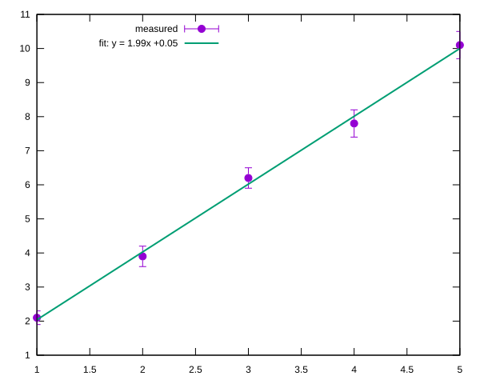
splot draws a function of x and y as a surface, and set pm3d colors it by height:
# surface.gnu
set terminal pdfcairo
set output "surface.pdf"
set xrange [-2:2]
set yrange [-2:2]
set isosamples 40 # grid density of the surface
set pm3d # color the surface by its z value
set view 60, 30 # elevation and azimuth in degrees
splot exp(-x**2 - y**2) notitle with pm3d
unset output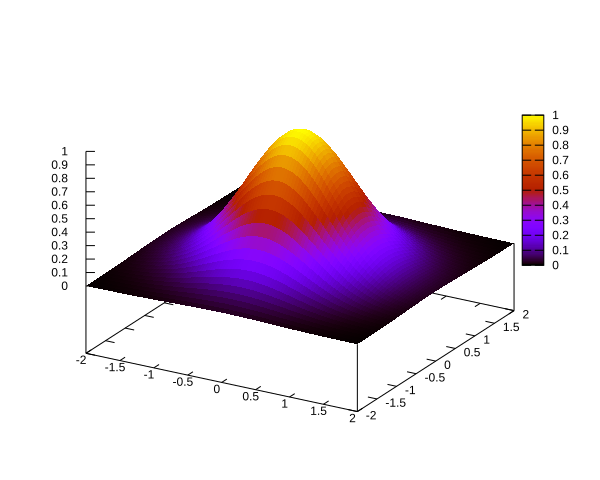
Run the script, then include the PDF in the document like any other image:
gnuplot plot.gnu # writes gnuplot-graph.pdf
latexmk -pdf graphics.tex\begin{figure}[htbp]
\centering
\includegraphics[width=0.7\textwidth]{gnuplot-graph.pdf}
\caption{A plot generated by gnuplot.}
\label{fig:gnuplot}
\end{figure}The labels in a pdfcairo plot use gnuplot’s fonts rather than the document’s. The cairolatex terminal instead writes the graphics to a PDF and the labels to a .tex file, which the document loads with \input so that LaTeX typesets the text, including math:
# latex-plot.gnu
set terminal cairolatex pdf size 12cm,8cm
set output "latex-plot.tex" # also writes latex-plot.pdf
set xlabel '$x$' # single quotes keep the backslashes literal
set ylabel '$f(x)$'
set xrange [-2*pi:2*pi]
set xtics ('$-2\pi$' -2*pi, '$-\pi$' -pi, '$0$' 0, '$\pi$' pi, '$2\pi$' 2*pi)
set key top right
plot sin(x) title '$\sin x$' with lines lw 2
unset output\begin{figure}[htbp]
\centering
\input{latex-plot.tex} % requires the graphicx and xcolor packages
\caption{A plot whose labels are typeset by LaTeX.}
\label{fig:latex-plot}
\end{figure}|
For web pages, compile a graphic on its own with the |
2. Asciidoctor
Asciidoctor renders LaTeX in two different ways: mathematical expressions pass through to the HTML output and are typeset in the browser by MathJax, whereas TikZ graphics are compiled by a local TeX installation into image files when the document is converted.
2.1. Mathematics
Asciidoctor supports mathematical notation through STEM (Science, Technology, Engineering, and Mathematics) processing. It supports both AsciiMath and LaTeX-style mathematical expressions. When generating HTML, Asciidoctor can prepare STEM expressions for rendering by a JavaScript-based mathematics engine such as MathJax. [9]
2.1.1. Enabling STEM support
A document-level attribute can override the global setting when necessary.
To enable STEM processing, set the stem attribute in the document header or configure the stem attribute globally in the site’s _config.yml file for using the Jekyll Asciidoc plugin:
asciidoctor:
attributes:
stem: latexmathThe value latexmath selects LaTeX syntax as the default for STEM expressions. If no notation is specified, Asciidoctor defaults to AsciiMath.
2.1.2. Rendering mathematics with MathJax
Asciidoctor processes STEM macros during document conversion, but HTML output generally requires a mathematics renderer to display the expressions as formatted mathematics in the browser. MathJax is a JavaScript library that can render LaTeX mathematics in HTML. [10]
<script>
window.MathJax = { (1)
options: {
ignoreHtmlClass: 'nostem|nolatexmath' (2)
},
tex: {
inlineMath: [['\\(', '\\)']], (3)
displayMath: [['\\[', '\\]']], (4)
tags: 'none' (5)
},
};
</script>
<script defer
src="https://cdnjs.cloudflare.com/ajax/libs/mathjax/4.1.3/tex-chtml.min.js" (6)
integrity="sha512-kO24RkUwCpSCXtdV9p2FM/5isVLi06qQPGlE+AsOx8kN9MTc6Mk7qlZBSEh/b7bvCr2vEWlZLAdp20QLkB/qPg=="
crossorigin="anonymous"
referrerpolicy="no-referrer">
</script>| 1 | Defines the MathJax configuration before the library loads. |
| 2 | Excludes HTML elements whose class matches nostem or nolatexmath from MathJax processing. |
| 3 | Sets \(…\) as the delimiters for inline mathematics. |
| 4 | Sets \[…\] as the delimiters for display mathematics. |
| 5 | Disables automatic equation numbering. |
| 6 | Loads the MathJax TeX-to-Common-HTML component. The tex-chtml.min.js filename indicates TeX input processing, Common HTML output, and a minified JavaScript file. |
2.1.3. STEM macros versus MathJax delimiters
There are two main ways to include mathematical expressions in an AsciiDoc document: using Asciidoctor’s STEM macros or writing LaTeX expressions directly between delimiters recognized by MathJax.
| Method | Example | Processing |
|---|---|---|
STEM macro |
|
Asciidoctor recognizes the macro and processes the expression according to the configured STEM notation. |
Explicit LaTeX macro |
|
Asciidoctor recognizes the macro and interprets its content as LaTeX notation. |
Raw MathJax delimiters |
|
MathJax processes the delimiters in the generated HTML, provided they are preserved and recognized by its configuration. |
The distinction matters because Asciidoctor processes STEM macros during document conversion, whereas MathJax normally renders mathematical expressions in the browser after the HTML has been generated. The two approaches can coexist, but their processing pipelines should be configured consistently.
For a Jekyll site using Asciidoctor, prefer stem:[...] for inline mathematics and [stem] blocks for display mathematics to make the source more explicit and avoid relying on MathJax to recognize raw delimiters throughout the generated HTML.
|
-
Use the
steminline macro to include a mathematical expression within a paragraph:The equation of a straight line is stem:[y = mx + c].The equation of a straight line is \(y = mx + c\).
To specify LaTeX notation explicitly, use the
latexmathmacro:The quadratic equation is latexmath:[ax^2 + bx + c = 0].The square brackets delimit the macro’s content. Unlike raw MathJax delimiters, the Asciidoctor STEM macro does not require wrapping the expression in
\(...\)or$...$. -
For a standalone equation, use a delimited STEM block:
[stem] ++++ x = \frac{-b \pm \sqrt{b^2 - 4ac}}{2a} ++++Because the document header specifies
:stem: latexmath, the expression is interpreted as LaTeX and rendered as a display equation:\[x = \frac{-b \pm \sqrt{b^2 - 4ac}}{2a}\]Alternatively, explicitly specify the notation (e.g., LaTeX) on the block:
[latexmath] ++++ \int_0^1 x^2\,dx = \frac{1}{3} ++++
2.2. Graphics
Asciidoctor Diagram is a set of Asciidoctor extensions that turns diagram source code written in a document, such as TikZ, gnuplot, Graphviz, or PlantUML, into images. When the document is converted, the extension runs the external tool for each diagram block, writes the image next to the output, and replaces the block with an image reference. [11]
A diagram block names the tool as its style, followed by the image file name and format:
[tikz, triangle, svg] // tool, file name without extension, output format
----
...diagram source...
----Only the tool is required. Without a file name, the image is named after a hash of the block’s content, such as diag-tikz-md5-<hash>.svg; without a format, the tool’s default applies, which is svg for TikZ and png for gnuplot. To set the format alone, leave the name empty, as in [gnuplot, , svg], or name the attribute, as in [gnuplot, format=svg].
-
Install the external tools that the diagram blocks call: TeX Live and
pdf2svgfor TikZ, andgnuplotfor gnuplot blocks (orgnuplot-noxon a machine without a display).sudo apt install \ texlive-latex-base \ texlive-latex-extra \ texlive-pictures \ pdf2svg \ gnuplot-nox -
Install the
asciidoctor-diagramgem, either directly or through Bundler.gem install asciidoctor-diagram# Gemfile gem "asciidoctor-diagram", "~> 3.0"bundle install -
Load the extension when invoking Asciidoctor; without it, diagram blocks render as plain listings.
asciidoctor -r asciidoctor-diagram graphics.adocAsciidoctor Diagram caches generated images in .asciidoctor/diagramand regenerates an image only when its source changes; add the folder to.gitignore. -
Jekyll’s cleanup deletes every file in
_sitethat Jekyll did not generate, including diagram images. [12] Preserve them in one of two ways:-
Per page: images land in each page’s folder, so names need only be unique within a post. Per-page folders cannot be listed in
keep_files; disable cleanup in the plugin file instead:# _plugins/jekyll-ext.rb class Jekyll::Cleaner def cleanup!; end endCleanup is then off site-wide: delete
_siteafter renaming or removing pages, or their stale files get published. -
Shared folder: an
imagesdirstarting with/writes every image to one folder under_site; list that folder inkeep_filesto keep cleanup active for the rest of the site:# _config.yml keep_files: - images asciidoctor: attributes: imagesdir: /imagesAll posts share one namespace: keep diagram names unique site-wide, or images overwrite each other.
Relative paths, such as include::targets andplot "data.dat", resolve from Jekyll’s working directory, normally the site root. Setbase_dir: :docdirunderasciidoctor:to resolve them from the post’s folder; addsafe: unsafeonly when they reach outside it.
-
2.2.1. TikZ
The tikz block wraps its content in a standalone LaTeX document, compiles it with pdfLaTeX, and converts the result to SVG with pdf2svg; the supported formats are svg and pdf. [13]
[tikz, triangle, svg]
----
\begin{tikzpicture}
\draw[thick] (0,0) -- (4,0) -- (2,3) -- cycle;
\node at (2,-0.3) {Triangle};
\end{tikzpicture}
----Packages such as PGFPlots are loaded through the preamble option, and a line containing only ~~~~ separates the preamble from the drawing code.
[tikz, parabola, svg, preamble]
----
\usepackage{pgfplots}
\pgfplotsset{compat=1.18}
~~~~
\begin{tikzpicture}
\begin{axis}[
axis lines=middle,
xlabel=$x$,
ylabel=$y$,
grid=major
]
\addplot[blue, thick, domain=-2:2, samples=100]
{x^2};
\end{axis}
\end{tikzpicture}
----The generated LaTeX document is based on the following template:
\documentclass[border=2bp, tikz]{standalone}
\usepackage{tikz}
<preamble>
\begin{document}
\begingroup
\tikzset{every picture/.style={scale=1}}
<TikZ code>
\endgroup
\end{document}2.2.2. Gnuplot
The gnuplot block passes its content to gnuplot as a script and captures the plot that gnuplot writes to its standard output; the supported formats are svg, png, gif, and txt, which renders the plot as ASCII art in a literal block. [14]
The extension selects the terminal itself by prepending a set terminal command that matches the block’s format, so the script contains only the plot settings.
[gnuplot, trig, svg, width=640, height=400]
----
set xrange [-2*pi:2*pi]
set yrange [-1.5:1.5]
set xtics ("-2π" -2*pi, "-π" -pi, "0" 0, "π" pi, "2π" 2*pi)
set grid
set key top right
plot sin(x) title "sin(x)" with lines lw 2, \
cos(x) title "cos(x)" with lines lw 2 dt 2
----
Do not use set terminal or set output in the block: the extension reads the image from gnuplot’s standard output, so redirecting the output to a file leaves the block without an image.
|
The block accepts attributes that the extension appends to its set terminal command:
| Attribute | Effect |
|---|---|
|
Sets the image size in pixels; both must be given. |
|
Sets the font, such as |
|
Sets the background color, or makes the background transparent with |
|
Crops the image to its content with |